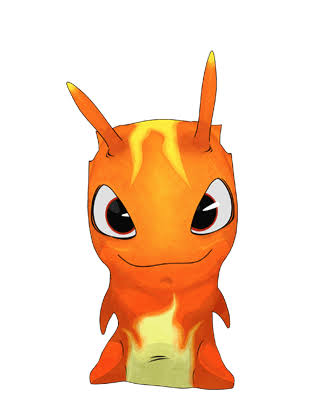
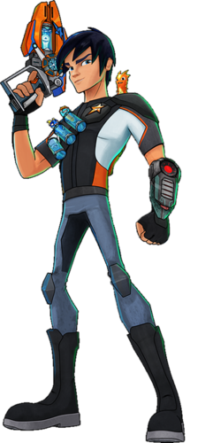
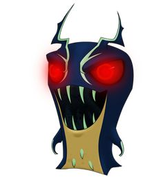

Desktop: (> 1280px)
Tablet: (> 800px)
Mobile: (< 800px)
Practical exercise building a responsive webpage layout that adapts smoothly across mobile, tablet, and desktop viewports.



Practical exercise building a responsive webpage layout that adapts smoothly across mobile, tablet, and desktop viewports.